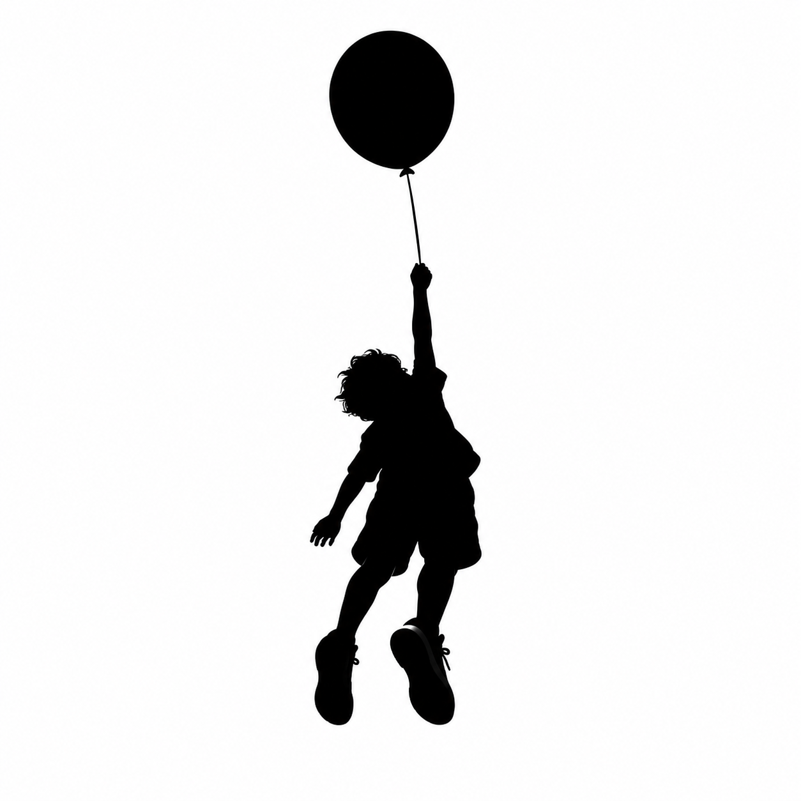

IMPULSO AUDIOVISUAL presenta...
Este adelanto de mi nuevo trabajo, está impregnado por las incesables aguas del tiempo.
Los que me conocen saben que hace mucho vengo creando y progresando mi expresión,
trabajando, fluyendo a merced de la deidad del elemento primordial del universo; el sonido.
Me siento, hoy, capaz de presentar las canciones que vengo acumulando hace 10 años.
Y lejos estoy de esa película, de ese personaje mental que destruí por el bien de la
canalización pura de mi expresión artística.
Jamás me sentí dueño de mis canciones y jamás me creí un dios creador de la música.
Si algo debemos admirar, es al artísta supremo,
que en su lienzo infinito y perfecto, supo vibrar en frecuencias divinas, inalcanzables
para el entendimiento humano y "pintar" los paisajes hermosos que nos rodean, incluyendo
los auspiciosos y propicios sistemas naturales los cuales nos permiten disfrutar
de la música en su máximo esplendor.
Mas que un creador de canciones, me siento una antena canalizadora de ideas ya existentes
en un universo marcando el pulso creativo.
Ojalá podamos volver a ver la verdadera función que cumple la música en nuestras vidas,
lejos de esa violación mercantil de lo sagrado del sonido, volver a curarnos con ella.
La medicina está ahí, detras de frecuencias y palabras imperfectas y humanas.
Debemos poder ver, que nuestro amor por crear, no es mas que una fiel imagen y semejanza,
de un universo en constante exploción creativa.
En esta página web van a poder disfrutar de adelantos exclusivos de canciones, imagenes e ideas. GRATIS.
Sigo trabajando humildemente en mi homestudio, para que el cierre de este largo ciclo, sea lo mas sano posible tanto para mí como para el respetado oyente. Puedo sentir el peso de las canciones, puedo sentir que ya no me pertenecen solo a mí.
Es un desapego que acepto, para volver a adentrarme, nuevamente, en una nueva etapa de canalización y trabajo, necesario.
Desde ya, gracias por escuchar, gracias por el apoyo y gracias por todo.
Con mucho amor...
Alejandro Ponce
músico compositor y productor musical.